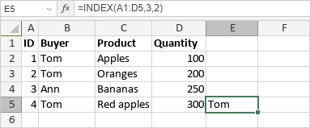

INDEX Funkcija
Funkcija INDEX je jedna od funkcija za pretragu i reference. Koristi se za vraćanje vrednosti unutar opsega ćelija na osnovu navedenog broja reda i kolone. Funkcija INDEX ima dva oblika.
Sintaksa funkcije INDEX u obliku niza je:
INDEX(array, row_num, [column_num])
Funkcija INDEX ima sledeće argumente:
| Argument | Opis |
|---|---|
| array | Opseg ćelija. |
| row_num | Broj reda iz kog želite da vratite vrednost. Ako je izostavljen, column_num je obavezan. |
| column_num | Broj kolone iz koje želite da vratite vrednost. Ako je izostavljen, row_num je obavezan. |
Sintaksa funkcije INDEX u referentnom obliku je:
INDEX(reference, row_num, [column_num], [area_num])
Funkcija INDEX ima sledeće argumente:
| Argument | Opis |
|---|---|
| reference | Referenca na opseg ćelija. |
| row_num | Broj reda iz kog želite da vratite vrednost. Ako je izostavljen, column_num je obavezan. |
| column_num | Broj kolone iz koje želite da vratite vrednost. Ako je izostavljen, row_num je obavezan. |
| area_num | Oblast koja se koristi u slučaju da niz sadrži više opsega. Ovo je opcioni argument. Ako je izostavljen, funkcija će podrazumevati da je area_num jednako 1. |
Napomene
Imajte u vidu da je ovo formula niza. Da biste saznali više, pročitajte članak Umetanje formula niza.
Kako primeniti funkciju INDEX.
Primeri
Slika ispod prikazuje rezultat koji vraća funkcija INDEX.
